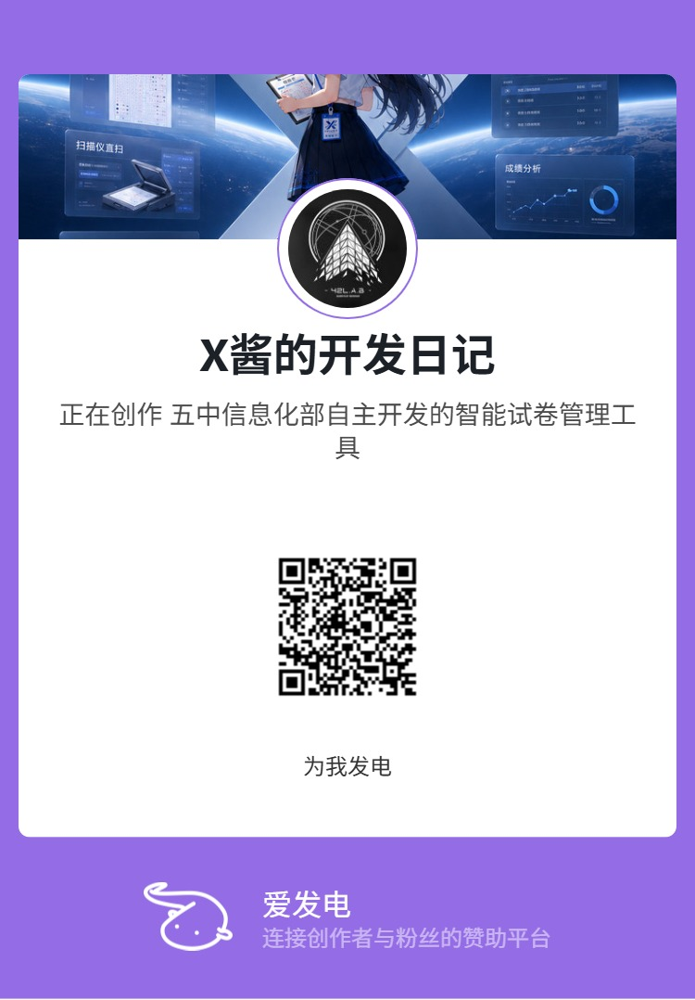

爱发电 · 赞助开发
让 Project-X
走得更远。
试卷星 Project-X 是五中信息化部全栈自研的开源系统：GPL-3.0 开源、零外包费用、成绩数据留在校内。 如果你认可这个项目，欢迎在爱发电上支持我们——每一份赞助都会直接变成下一行的代码、下一张测试的答题卡。

为什么赞助
自研系统的每一分钱，都花在刀刃上。
外包阅卷按次收费、逐年涨价；Project-X 立项时就是要摆脱这个循环。它不卖授权、不做商业化，赞助只用来覆盖真实的开发成本。
01
服务器与带宽
校内服务器托管、域名与带宽费用——让系统 7×24 稳定在线，考试季不宕机。
02
扫描与测试设备
老旧机房兼容测试、多型号扫描仪实测（TWAIN 链路）、识别引擎真机调参——硬件是测试成本的大头。
03
周边与物料
爱发电回报包含周边图包、表情包与看板娘物料，由赞助反哺制作，让项目氛围更鲜活。
透明说明：赞助完全自愿。不赞助也可以免费使用全部功能；项目源码在 GitHub 全量公开，欢迎审阅与二次开发。
支持 Project-X“从第一张答题卡，到全校的网上阅卷——每一份支持，都让这套系统离更多人更近一步。”
—— 大连市第五中学信息化部